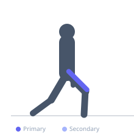

Exercise guide / Poliquin Step-Up / Heel-Elevated Lateral Step-Up
Poliquin Step-Up / Heel-Elevated Lateral Step-Up
The Poliquin step-up is a unilateral exercise developed to specifically target the vastus medialis (VMO). The lifter steps sideways onto a low box or step while keeping the working heel elevated, maximizing knee extension load on the inner quadriceps. The heel-elevated foot position prevents weight shifting to the hip extensors, making this a highly specific VMO strengthening exercise used extensively in knee rehabilitation and sports performance.
Primary muscles
vastus medialis
Secondary muscles
rectus femoris
vastus lateralis
vastus intermedius
Stabilizers
gluteus medius
Equipment
No Equipment (Bodyweight)
Optional
Dumbbell (Fixed)


Starting position
- Stand beside a box or step approximately 4-6 inches high. Place the working foot on the step laterally, with the heel elevated slightly (by the step edge or a plate beneath the heel). The opposite foot remains on the floor.
Setup
- Use a low step or box. Place heel on the edge to create slight elevation. Begin with bodyweight.
Steps
- Step 1: Drive the working heel down into the step, extending the knee from roughly 90 degrees to full extension.
- Step 2: At no point does the opposite foot leave the floor or take weight — it is a touch guide only.
- Step 3: Lower back down with control, allowing the knee to flex back to about 90 degrees.
- Step 4: Repeat all reps on one side before switching.
Coaching cues
- Feel the inner quad working
- Drive through the heel of the step foot only
- No weight on the floor foot
Breathing
- Exhale on extension, inhale on the controlled return.
Range of motion
- Work from approximately 90 degrees of knee flexion to nearly full extension. Keep tension on the VMO throughout.
Tempo
- 2-0-2-0 controlled (2s up, 2s down)
Common mistakes
- Pushing through the floor foot rather than the step foot
- Using momentum or body lean
- Full knee extension with a lock-out that reduces tension
Safety
- Very low-load exercise — appropriate for post-surgery rehabilitation when cleared
- Consult a physiotherapist if using for patellar tracking issues
Training
- strength: 10–15 reps
- endurance: 15–25 reps
- strength: 3–4 sets
- endurance: 2–3 sets
- Rest: {'strength': 60, 'endurance': 30}